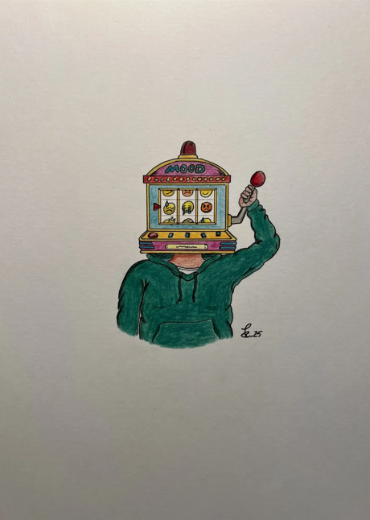

2025 | Farbstifte auf Papier | DIN A4 Hochformat
Schön wäre es, wenn das so einfach ginge. Das Leben ist nicht immer planbar. Niemand ist immer bestens gelaunt und
für Menschen mit Depressionen kann diese Unberechenbarkeit besonders schwer sein.
Manchmal fühlt es sich an, als würdest du die Kontrolle über deinen eigenen Körper verlieren,
als wärst du fremdbestimmt. In einem Moment scheint alles in Ordnung zu sein und ohne dass sich äußerlich etwas verändert,
fällt im nächsten Moment alles in sich zusammen.
Ein bisschen wie Glücksspiel: Du kannst den Hebel ziehen, aber nicht bestimmen, welche Stimmung am Ende stehen bleibt.
Genau deshalb trägt die Personen einen einarmigen Banditen als Kopf, als Sinnbild für Kontrollverlust, Unberechenbarkeit
und die Hoffnung auf einen guten Ausgang.